Matricaria recutita
Chamomile Flowers
Whole daisy heads, soft and apple-sweet.
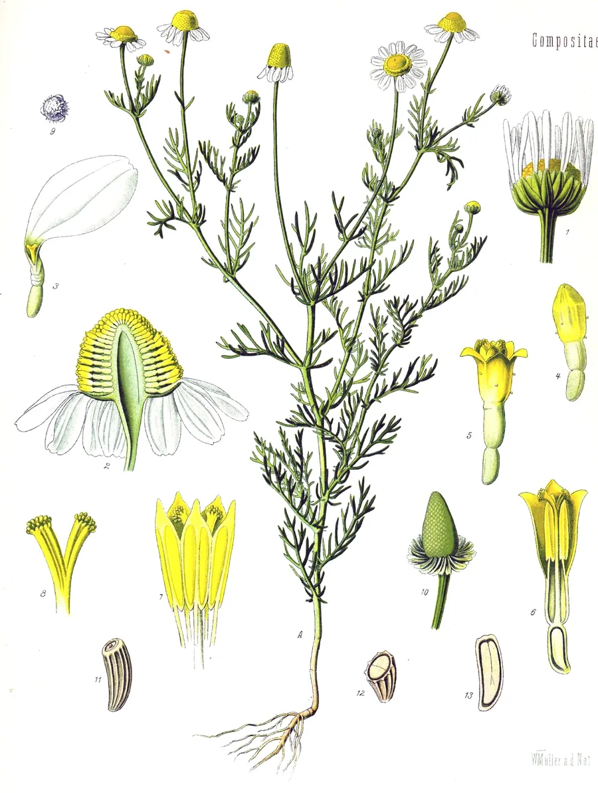
From £5.50
About this plateMatricaria recutita
Whole daisy heads, soft and apple-sweet.

From £5.50
About this plateMentha × piperita
Cool, sweet and proper minty, from leaves we dry whole.
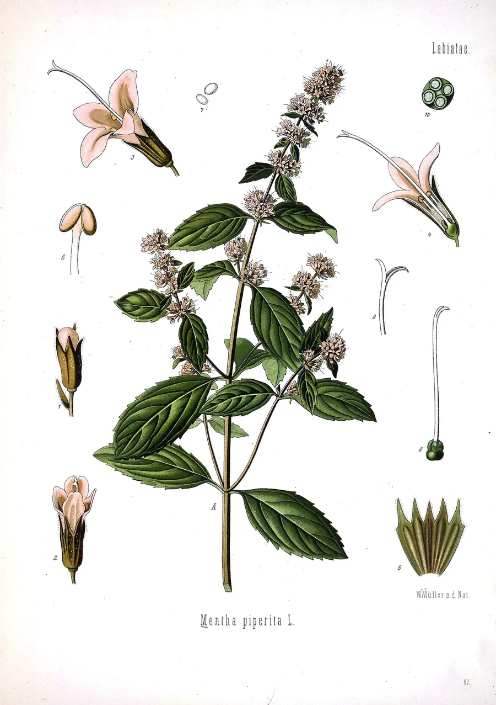
From £4.90
About this plateCalendula officinalis
Marigold petals steeped in sunflower oil, set with beeswax.
From £8.50
About this plateSymphytum officinale
A firm balm for hardworking hands, from comfrey leaf and root.
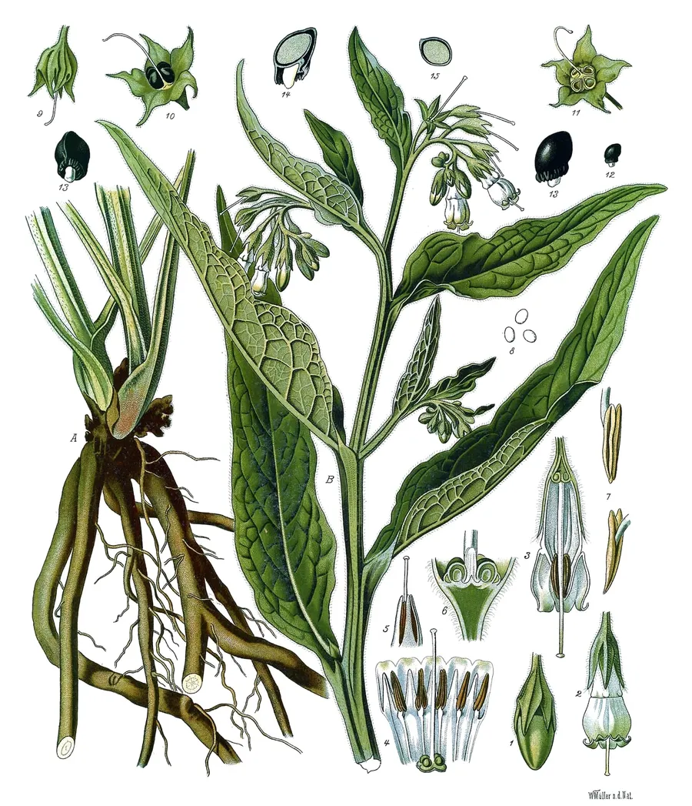
From £9
About this plateUrtica dioica
Picked in May before flowering. Deep, green and clean.
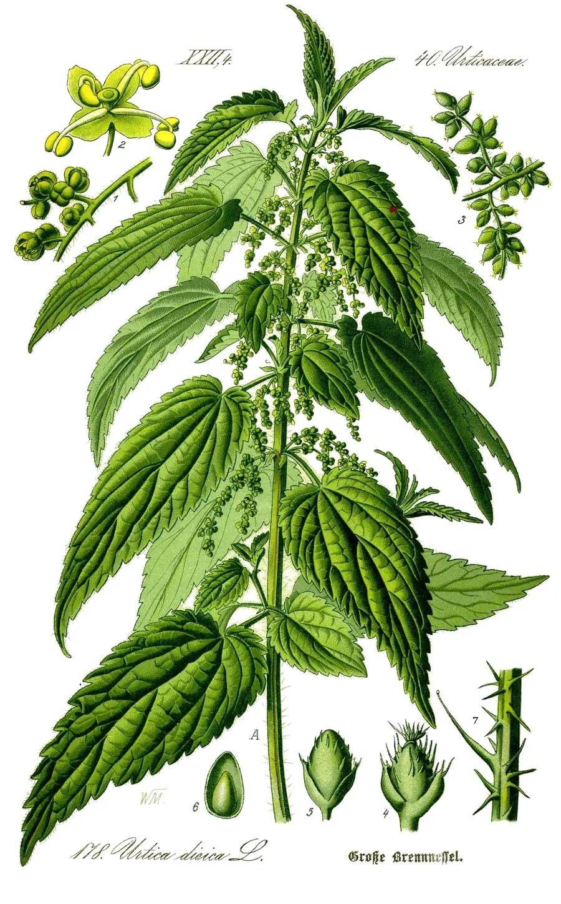
From £4.80
About this plateSambucus nigra
Hedgerow elderberries simmered with ginger, cloves and local honey.
£11.50
About this plateTwelve plates in the cabinet. Pick an hour or a taste and the right ones come forward.
 Chamomile FlowersMatricaria recutitaFrom £5.50
Chamomile FlowersMatricaria recutitaFrom £5.50 Stinging Nettle LeafUrtica dioicaFrom £4.80
Stinging Nettle LeafUrtica dioicaFrom £4.80 Lemon BalmMelissa officinalisFrom £5.20
Lemon BalmMelissa officinalisFrom £5.20 PeppermintMentha × piperitaFrom £4.90
PeppermintMentha × piperitaFrom £4.90 Lime BlossomTilia cordataFrom £6.20
Lime BlossomTilia cordataFrom £6.20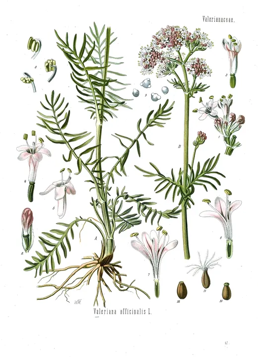
Quiet Hours BlendValeriana officinalis and friendsFrom £6.80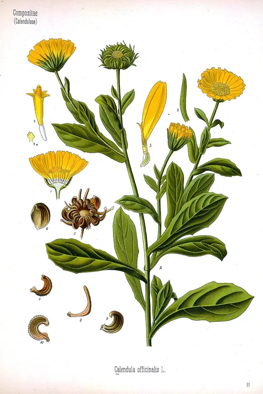
Calendula SalveCalendula officinalisFrom £8.50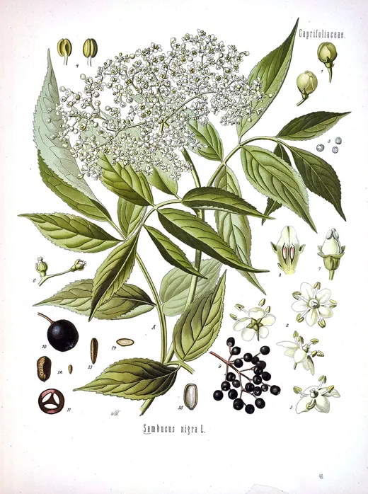
Elderberry SyrupSambucus nigra£11.50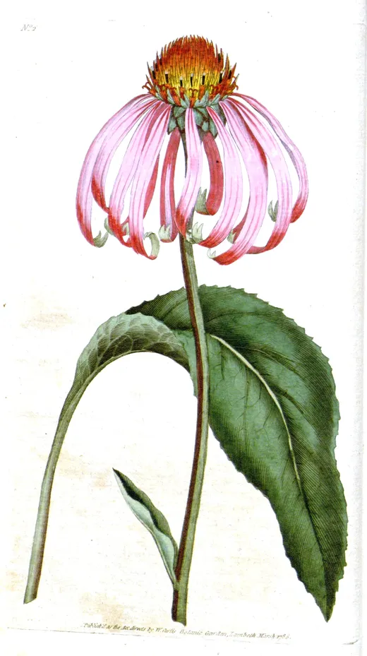
Echinacea TinctureEchinacea purpurea£12.50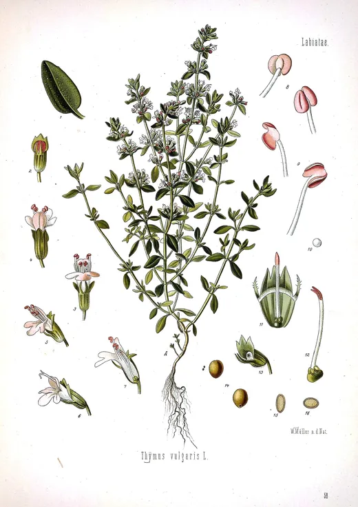
Thyme HoneyThymus vulgaris£8.90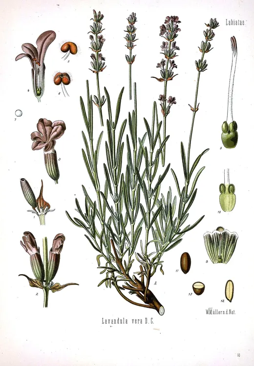
Lavender Bath SaltsLavandula angustifoliaFrom £10.50Wildcombe is fourteen small beds on a south-facing slope on the edge of Dartmoor. Everything we sell is picked by hand, dried on racks in the barn the same day, and packed in Totnes on Tuesdays and Fridays.
We started with a stall at the Friday market in 2011, with a dozen herbs and a hand scale. Now there are a few more people, but the picking is still done by whoever is in that morning. Anything we cannot grow ourselves, we buy from growers we know by name, and we say so on the label.
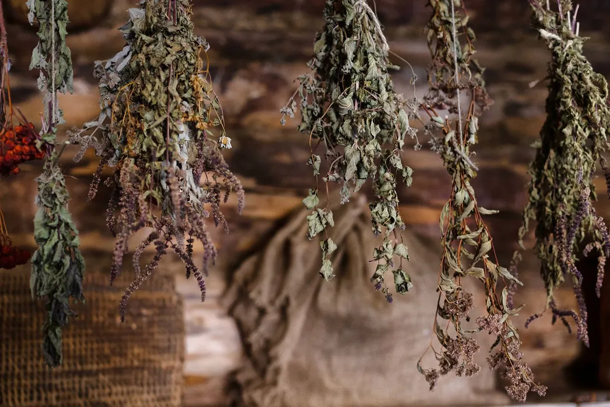
Loose herbs like room to move. Use a pot or a large mug with a strainer, warm it first, and cover it while it steeps so the oils stay in.
| Tea | Per cup | Water | Steep |
|---|---|---|---|
| Chamomile Flowers | 1 heaped teaspoon | 95°C | 5 minutes |
| Stinging Nettle Leaf | 1 heaped teaspoon | 100°C | 5 to 7 minutes |
| Lemon Balm | 1 heaped teaspoon | 95°C | 5 minutes |
| Peppermint | 1 heaped teaspoon | 95°C | 4 minutes |
| Lime Blossom | 2 teaspoons | 95°C | 5 to 6 minutes |
| Quiet Hours Blend | 1 heaped teaspoon | 95°C | 6 minutes |
Two or three of our teas, picked by us, posted on the first Monday of each month. Pause, skip or stop whenever you like.

A teaspoon, a covered cup and a little patience. Most herbal tea that tastes of nothing was rushed.
The first herb up on the combe, and the one with the shortest window. A morning in the nettle bed.
Brewing, drying, and a year on the combe.
Read the journal